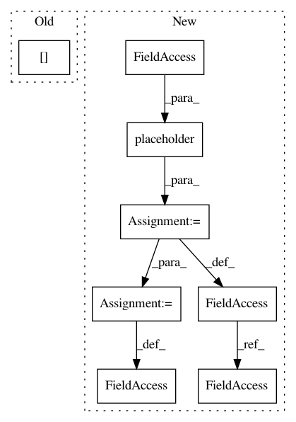

5f4ae6c7f2e71382ef42e18bd33e1edb64e30b8c,foolbox/models/tensorflow.py,TensorFlowModel,__init__,#TensorFlowModel#Any#Any#Any#Any#Any#,30
Before Change
self._label = tf.placeholder(tf.int64, (), name="label")
loss = tf.nn.sparse_softmax_cross_entropy_with_logits(
labels=self._label[tf.newaxis],
logits=self._logits[tf.newaxis])
self._loss = tf.squeeze(loss, axis=0)
gradients = tf.gradients(loss, images)
After Change
bw_gradients[0] = tf.zeros_like(images)
self._bw_gradient = tf.squeeze(bw_gradients[0], axis=0)
self._bw_gradients_pre = tf.placeholder(tf.float32, self._batch_logits.shape) // noqa: E501
batch_bw_loss = tf.reduce_sum(self._batch_logits * self._bw_gradients_pre) // noqa: E501
batch_bw_gradients = tf.gradients(batch_bw_loss, images)
assert len(batch_bw_gradients) == 1
if batch_bw_gradients[0] is None:
batch_bw_gradients[0] = tf.zeros_like(images)
self._bw_gradients = batch_bw_gradients[0]
@classmethod
def from_keras(cls, model, bounds, input_shape=None,
channel_axis=3, preprocessing=(0, 1)):
In pattern: SUPERPATTERN
Frequency: 3
Non-data size: 8
Instances
Project Name: bethgelab/foolbox
Commit Name: 5f4ae6c7f2e71382ef42e18bd33e1edb64e30b8c
Time: 2019-05-17
Author: git@jonasrauber.de
File Name: foolbox/models/tensorflow.py
Class Name: TensorFlowModel
Method Name: __init__
Project Name: tensorflow/cleverhans
Commit Name: f9dd2e3636db61ee1b4d32ee4f494fd9e71adc12
Time: 2017-03-29
Author: ngp5056@cse.psu.edu
File Name: cleverhans/attacks.py
Class Name: Attack
Method Name: generate_np
Project Name: tensorflow/cleverhans
Commit Name: f9dd2e3636db61ee1b4d32ee4f494fd9e71adc12
Time: 2017-03-29
Author: ngp5056@cse.psu.edu
File Name: cleverhans/attacks.py
Class Name: FastGradientMethod
Method Name: generate_np